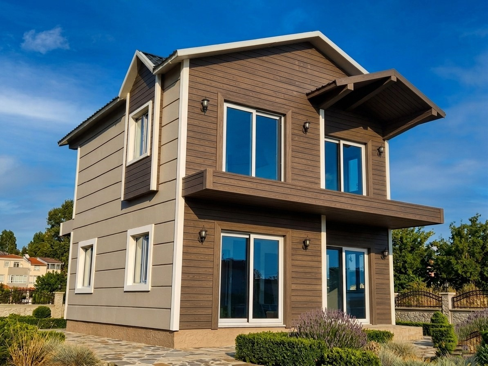
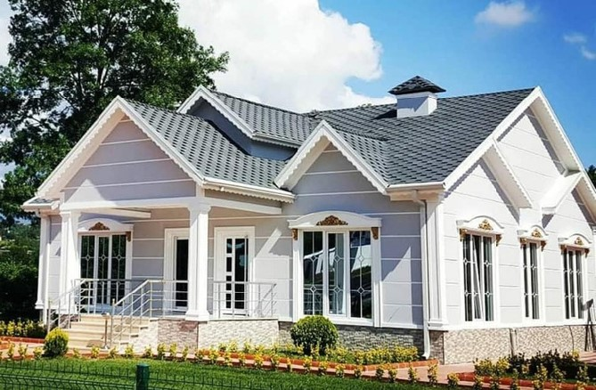
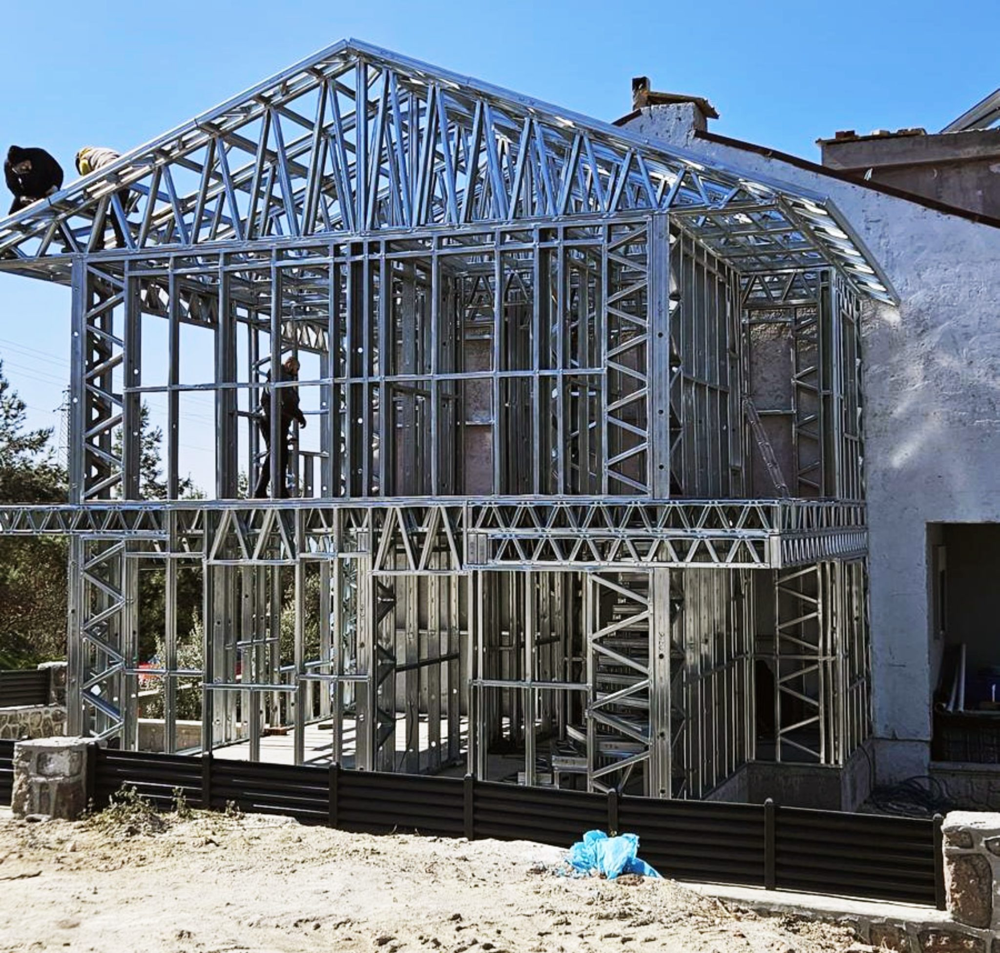

AnkaraKonut
Manora Prestij
Konut bloğu için geliştirilen mimari görselleştirme ve cephe dili.
Projeyi İncele →
Konut bloğu için geliştirilen mimari görselleştirme ve cephe dili.
Projeyi İncele →
İki katlı çelik sistem villa uygulaması.
Projeyi İncele →
Doğaya uyumlu tek katlı yaşam yapısı için hafif çelik kurulum örneği.
Projeyi İncele →
Konut ve açık alan kurgusu içeren proje görseli.
Projeyi İncele →
1.350.000 m² alan üzerine kurulan büyük ölçekli proje arşivi.
Projeyi İncele →
Referans dokümanındaki uygulama, taşıyıcı sistem ve teslim örnekleri.
Fotoğraf Arşivi →